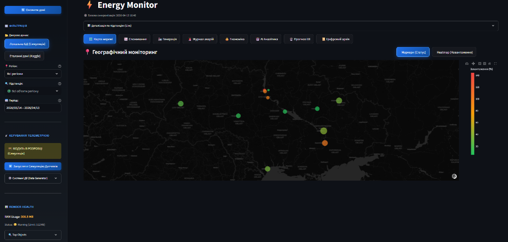
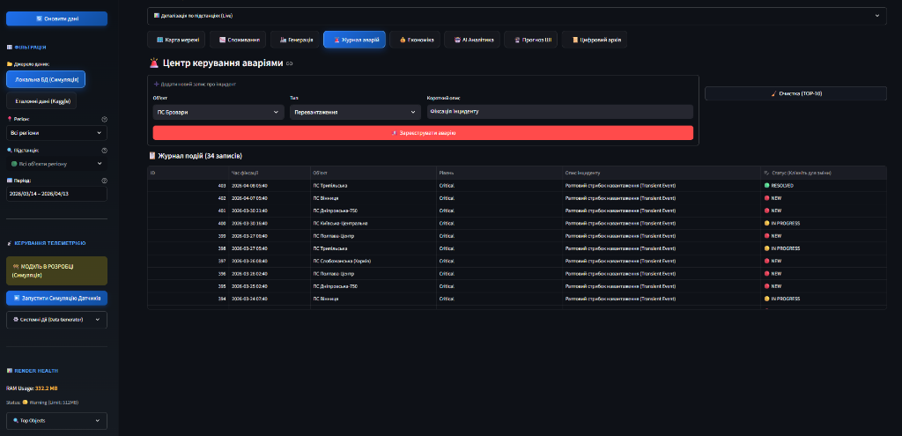

РОЗДІЛ 3. ПРОЄКТНІ РІШЕННЯ ТА ПРОГРАМНА РЕАЛІЗАЦІЯ СИСТЕМИ
3.1. Загальна архітектура та інформаційне забезпечення
Як ми побудували архітектуру системи? Проєктування архітектури інтелектуальної системи EnergyMonitor-OLAP базується на принципах модульності, масштабованості та суворого розділення відповідальності (Separation of Concerns). Для забезпечення стабільної роботи у хмарному середовищі та високої швидкості аналітичних обчислень ми обрали багатошарову архітектуру (Layered Architecture), що складається з чотирьох функціональних рівнів. Цей підхід дозволяє ізолювати логіку збору даних, їх математичного оброблення та візуалізації. Нижче наведено ієрархічну схему взаємодії основних компонентів системи (Рис. 3.1).
graph TB
subgraph UI["Рівень представлення (Streamlit)"]
direction LR
A1["KPI Панель"]
A2["ML Прогноз"]
A3["ГІС Карта"]
end
subgraph CORE["Інтелектуальний шар"]
direction LR
B1["LSTM v3\npredict_v2.py"]
B3["Фізичний двигун\nphysics.py"]
B4["Векторизатор\n(Sliding Window)"]
end
subgraph DATA["Шар даних (OLAP)"]
direction LR
C1[("PostgreSQL\nNeon Cloud")]
C3["Цифровий двійник\nСимуляція сенсорів"]
end
subgraph DEVOPS["DevOps Шар"]
direction LR
D1["GitHub Actions\nCI/CD"]
D2["Docker\nКонтейнер"]
end
UI -->|"Запит даних"| CORE
CORE -->|"SQL SELECT"| DATA
C3 -->|"SQL INSERT телеметрія"| C1
B1 -->|"Результати ШІ"| UIgraph TD
subgraph Local ["💻 LOCAL ENVIRONMENT"]
DG["data_generator.py\n(Симулятор)"]
end
subgraph Cloud ["☁️ CLOUD INFRASTRUCTURE (Render)"]
DB[(PostgreSQL\nOLAP Database)]
Vect["vectorizer.py"]
Pred["predict_v2.py"]
UI["main.py\n(Dashboard)"]
end
DG ==>|"Telemetry Push"| DB
DB <-->|"Data Exchange"| Vect
Vect --> Pred
Pred --> UIДля глибшого розуміння динаміки взаємодії компонентів необхідно розглянути життєвий цикл обробки запиту на отримання прогнозу. Процес ініціюється користувачем через графічний інтерфейс і запускає каскадну послідовність операцій: від вилучення історичного вікна телеметрії з бази даних до векторизації (із застосуванням тригонометричного кодування часу), виконання інференсу моделлю LSTM та повернення денормалізованого масиву для візуалізації. Детальну послідовність цих процесів наведено на діаграмі (Рис. 3.3).
sequenceDiagram
participant User as Користувач
participant UI as Streamlit UI
participant Core as ML Controller
participant Vect as Vectorizer
participant DB as PostgreSQL
participant Model as LSTM v3
User->>UI: Натискання кнопки "Отримати прогноз"
UI->>Core: Запит на інференс (sub_name)
Core->>Vect: Підготовка вікна даних (look-back)
Vect->>DB: SQL SELECT (останні 24 години)
DB-->>Vect: Набір телеметрії
Vect->>Vect: Нормалізація та sin/cos кодування
Vect-->>Core: Вхідний тензор (24, 9)
Core->>Model: Виконання прогнозу
Model-->>Core: Результати (t+1 ... t+24)
Core-->>UI: Денормалізований масив даних
UI->>User: Візуалізація графіка Plotly3.2. Характеристики прикладного ПЗ та безпека системи
3.2.1. Технічні характеристики програмного забезпечення
Розроблена система EnergyMonitor-OLAP має такі базові характеристики: * Назва: Інформаційна SaaS-платформа предиктивного моніторингу енергомереж. * Мова програмування: Python 3.11 (з використанням бібліотек TensorFlow, Pandas, SQLAlchemy, Streamlit). * Основний функціонал: збір телеметрії, імітаційне моделювання Digital Twin, ШІ-прогнозування (LSTM v3), багатовимірний аналіз (OLAP). * Обмеження системи: 1. Залежність від мережі: через використання хмарних сервісів (Neon PostgreSQL, Render) система потребує стабільного інтернет-з'єднання. 2. Ресурсомісткість: завантаження ваг нейромережі LSTM потребує не менше 1 ГБ вільної оперативної пам'яті (RAM) на сервері. 3. Обсяг даних: для коректної роботи Sliding Window (48h) необхідна наявність неперервного часового ряду без значних пропусків.
3.2.2. Забезпечення безпеки системи
Для захисту даних та забезпечення стійкості алгоритмів впроваджено чотирирівневу систему безпеки:
1. Математична безпека (Algorithmic Robustness): використання функції втрат Huber Loss робить предиктивне ядро стійким до аномальних викидів та датчикових шумів, які часто виникають в енергомережах.
2. Технічна безпека: застосування технології контейнеризації Docker дозволяє ізолювати ПЗ від вразливостей хост-системи та гарантувати ідентичність середовищ розробки та деплою.
3. Програмна безпека (Software Guard): використання параметризованих SQL-запитів через ORM SQLAlchemy повністю нівелює ризик атак типу SQL-injection. Реалізовано валідацію вхідних даних на рівні типів Pydantic/Python.
4. Інформаційна безпека: всі підключення до бази даних у хмарі Neon Cloud захищені за протоколом SSL/TLS. Секретні ключі та паролі винесені у змінні середовища (.env), що унеможливлює їх витік через систему контролю версій.
3.3. Структура бази даних та інформаційне наповнення
Центральним елементом інформаційного забезпечення системи є реляційна база даних PostgreSQL. Проєктування здійснювалося на двох рівнях:
- Логічний рівень: Використано аналітичну схему «зірка» (Star Schema), де центром є таблиця фактів
LoadMeasurements, пов’язана зовнішніми ключами (Foreign Keys) з таблицями вимірівSubstations,RegionsтаWeatherReports. Це дозволяє зберігати цілісність даних на рівні СУБД (Constraints). - Фізичний рівень: Для прискорення вибірок застосовано B-tree індексацію за стовпцями
timestampтаsubstation_id. Дані розміщуються в ієрархічному сховищі Neon Cloud, що забезпечує автоматичне масштабування дискового простору.
Логічну структуру бази даних представлено на ER-діаграмі (Рис. 3.4).
erDiagram
REGIONS ||--o{ SUBSTATIONS : "містить"
SUBSTATIONS ||--o{ LOADMEASUREMENTS : "генерує навантаження"
SUBSTATIONS ||--o{ ALERTS : "генерує аварії"
SUBSTATIONS ||--o{ GENERATORS : "має джерела"
GENERATORS ||--o{ GENERATIONMEASUREMENTS : "виробляє енергію"
REGIONS ||--o{ WEATHERREPORTS : "має погоду"
REGIONS {
int region_id PK
string region_name
}
SUBSTATIONS {
int substation_id PK
string substation_name
float capacity_mw
}
LOADMEASUREMENTS {
int measurement_id PK
int substation_id FK
float actual_load_mw
float health_score
timestamp timestamp
}Для забезпечення високої швидкодії інтерфейсу система формує оптимізовані SQL-запити з об'єднанням таблиць (JOIN). Типовим прикладом є запит для кореляції фактичного навантаження та температури довкілля за історичний період:
SELECT
lm.timestamp,
r.region_name,
lm.actual_load_mw,
wr.temperature
FROM LoadMeasurements lm
JOIN Substations s ON lm.substation_id = s.substation_id
JOIN Regions r ON s.region_id = r.region_id
LEFT JOIN WeatherReports wr ON lm.timestamp = wr.timestamp AND r.region_id = wr.region_id
WHERE lm.timestamp >= NOW() - INTERVAL '30 days'
ORDER BY lm.timestamp ASC;
3.2. Математичне забезпечення та алгоритми машинного навчання
Для реалізації функції прогнозування у проєкті EnergyMonitor-OLAP розроблено математичне забезпечення, що базується на поєднанні статистичної обробки ознак та глибокого навчання.
Інженерія ознак (Feature Engineering) та тригонометричне кодування
Для навчання моделі було сформовано дев’ятивимірний вектор ознак, що включає фізичні параметри навантаження, температурні умови та часові детермінанти. Ключовою особливістю підготовки даних є використання гармонійного кодування часу. На відміну від прямого представлення години як цілого числа \([0, 23]\), тригонометрична трансформація дозволяє виключити проблему розриву (наприклад, між 23:00 та 00:00) та забезпечити математичну безперервність циклічних процесів. Трансформація виконується за формулами: $\(x_{sin} = \sin \left( \frac{2\pi \cdot t}{T} \right); \quad x_{cos} = \cos \left( \frac{2\pi \cdot t}{T} \right)\)$ де \(t\) — поточна година або день тижня, \(T\) — період циклічності (24 для доби, 7 для тижня).
Масштабування та формування часових вікон
Враховуючи високу чутливість рекурентних нейронних мереж до розкиду значень, застосовано алгоритм MinMaxScaler, який приводить усі ознаки до діапазону \([0, 1]\). Процес формування вибірок реалізовано методом ковзного вікна (Sliding Window) з глибиною перегляду (Look-back) «до 48 годин» (два доби поточного моменту) для короткострокового прогнозу.
Архітектура нейронної мережі LSTM v3
Для виявлення нелінійних залежностей у часових рядах обрано модифіковану архітектуру LSTM (Long Short-Term Memory). Проєктну структуру моделі представлено такою послідовністю шарів:
1. Вхідний LSTM-шар (128 юнітів): Виконує вилучення складних часових ознак із поверненням повної послідовності (return_sequences=True).
2. Проміжний LSTM-шар (64 юніти): Агрегує інформацію та формує компактне представлення стану системи.
3. Повнозв’язний шар (32 нейрони): Використовує функцію активації ReLU для внесення нелінійності.
4. Вихідний шар (1 нейрон): Формує кінцеве значення прогнозу.
Параметри оптимізації та навчання
Як функцію втрат обрано Huber Loss, що є робастною комбінацією MSE та MAE, забезпечуючи стійкість моделі до викидів та датчикового шуму. Оптимізацію ваг нейромережі здійснює алгоритм Adam з адаптивною швидкістю навчання. Для запобігання перенавчанню впроваджено механізм Early Stopping, який припиняє процес навчання, якщо помилка на валідаційній вибірці не демонструє покращення протягом 15 ітерацій.
3.3. Програмна реалізація інтерфейсу та розгортання
Для створення продуктивного середовища взаємодії користувача з інтелектуальною моделлю розроблено програмний комплекс на базі мови Python та сучасних хмарних технологій.
Веб-інтерфейс на базі Streamlit
Користувацький інтерфейс реалізовано у форматі багатосторінкової аналітичної панелі (Dashboard). Ключові технологічні рішення Frontend-шару включають:
* Granular Rendering: Метод фрагментарного рендерингу вкладок, що дозволяє завантажувати важкі часові ряди та карти Folium лише за запитом, мінімізуючи навантаження на оперативну пам’ять сервера.
* State Management: Керування станом додатка через об’єкт session_state, що гарантує збереження результатів інференсу при навігації.
* Robust Database Handler: Система декораторів із логікою повторних спроб (Retry logic), яка забезпечує стійкість підключення до хмарної БД Neon при мережевих тайм-аутах.
[РИСУНОК 3.5 — СКРІНШОТ: ГОЛОВНА ПАНЕЛЬ МОНІТОРИНГУ KPI] (Опис: Візуалізація основних метрик системи: поточне навантаження, стан здоров'я підстанцій та Health Score).
[РИСУНОК 3.6 — СКРІНШОТ: ПРЕДИКТИВНА ПАНЕЛЬ (LSTM FORECAST)] (Опис: Побудований графік прогнозу на 24-48 годин на фоні фактичних даних з довірчими інтервалами).
Важливою частиною системи є геоінформаційний шар Digital Twin, який дозволяє оператору бачити топологічне розташування об'єктів та їх поточний стан на інтерактивній мапі (рис. 3.7).

Рис. 3.7. Карта цифрового двійника з маркерами стану підстанцій
Система автоматичного виявлення аномалій та температурної деградації обладнання виводить критичні сповіщення у журналі аномалій, що представлений на рис. 3.8.

Рис. 3.8. Журнал моніторингу аномалій та критичних подій системи
Контейнеризація та CI/CD конвеєр
Для стабільного розгортання системи застосовано технологію Docker. Конфігурація базується на легкому образі python:3.11-slim з оптимізованим встановленням математичних залежностей. Процес автоматизованої інтеграції та розгортання (CI/CD) на платформі Render.com охоплює етапи лінтингу, юніт-тестування (pytest) та автоматичного оновлення продуктового контейнера при кожному коміті до GitHub-репозиторію.
flowchart LR
Push["git push"] --> Lint["Linting (flake8)"]
Lint --> Tests["Unit Tests (pytest)"]
Tests --> Build["Docker Build"]
Build --> Deploy["Deploy to Render.com"]Верифікація коду та методика тестування
Комплексна перевірка працездатності системи базується на 79 автоматизованих тестах (фреймворк pytest), що охоплюють усі архітектурні шари. Тестування включає верифікацію математичної коректності фізичних розрахунків у physics.py (втрати, деградація), валідацію нормалізації через MinMaxScaler та перевірку інференсу моделі LSTM. Отримані результати підтверджують відповідність розробленої системи ТЗ та показники MAPE < 3.1% на еталонному наборі PJM Dayton.
[РИСУНОК 3.9 — ТЕХНОЛОГІЧНА СХЕМА CI/CD КОНВЕЄРА] (Опис: Етапи автоматичної збірки та деплою: Linting -> Testing -> Docker Build -> Render Deploy).